This chapter covers
Understanding deep learning requires familiarity with many simple mathematical concepts: tensors, tensor operations, differentiation, gradient descent, and so on. Our goal in this chapter will be to build your intuition about these notions without getting overly technical. In particular, we’ll steer away from mathematical notation, which can be off-putting for those without any mathematics background and isn’t strictly necessary to explain things well.
To add some context for tensors and gradient descent, we’ll begin the chapter with a practical example of a neural network. Then we’ll go over every new concept that’s been introduced, point by point. Keep in mind that these concepts will be essential for you to understand the practical examples that will come in the following chapters!
After reading this chapter, you’ll have an intuitive understanding of how neural networks work, and you’ll be able to move on to practical applications—which will start with chapter 3.
Let’s look at a concrete example of a neural network that uses the Python library Keras to learn to classify handwritten digits. Unless you already have experience with Keras or similar libraries, you won’t understand everything about this first example right away. You probably haven’t even installed Keras yet; that’s fine. In the next chapter, we’ll review each element in the example and explain them in detail. So don’t worry if some steps seem arbitrary or look like magic to you! We’ve got to start somewhere.
The problem we’re trying to solve here is to classify grayscale images of handwritten digits (28 × 28 pixels) into their 10 categories (0 through 9). We’ll use the MNIST dataset, a classic in the machine-learning community, which has been around almost as long as the field itself and has been intensively studied. It’s a set of 60,000 training images, plus 10,000 test images, assembled by the National Institute of Standards and Technology (the NIST in MNIST) in the 1980s. You can think of “solving” MNIST as the “Hello World” of deep learning—it’s what you do to verify that your algorithms are working as expected. As you become a machine-learning practitioner, you’ll see MNIST come up over and over again, in scientific papers, blog posts, and so on. You can see some MNIST samples in figure 2.1.
Figure 2.1. MNIST sample digits
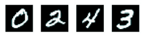
In machine learning, a category in a classification problem is called a class. Data points are called samples. The class associated with a specific sample is called a label.
You don’t need to try to reproduce this example on your machine just now. If you wish to, you’ll first need to set up Keras, which is covered in section 3.3.
The MNIST dataset comes preloaded in Keras, in the form of a set of four Numpy arrays.
Listing 2.1. Loading the MNIST dataset in Keras
from keras.datasets import mnist (train_images, train_labels), (test_images, test_labels) = mnist.load_data()
train_images and train_labels form the training set, the data that the model will learn from. The model will then be tested on the test set, test_images and test_labels. The images are encoded as Numpy arrays, and the labels are an array of digits, ranging from 0 to 9. The images and labels have a one-to-one correspondence.
Let’s look at the training data:
>>> train_images.shape (60000, 28, 28) >>> len(train_labels) 60000 >>> train_labels array([5, 0, 4, ..., 5, 6, 8], dtype=uint8)
And here’s the test data:
>>> test_images.shape (10000, 28, 28) >>> len(test_labels) 10000 >>> test_labels array([7, 2, 1, ..., 4, 5, 6], dtype=uint8)
The workflow will be as follows: First, we’ll feed the neural network the training data, train_images and train_labels. The network will then learn to associate images and labels. Finally, we’ll ask the network to produce predictions for test_images, and we’ll verify whether these predictions match the labels from test_labels.
Let’s build the network—again, remember that you aren’t expected to understand everything about this example yet.
Listing 2.2. The network architecture
from keras import models from keras import layers network = models.Sequential() network.add(layers.Dense(512, activation='relu', input_shape=(28 * 28,))) network.add(layers.Dense(10, activation='softmax'))
The core building block of neural networks is the layer, a data-processing module that you can think of as a filter for data. Some data goes in, and it comes out in a more useful form. Specifically, layers extract representations out of the data fed into them—hopefully, representations that are more meaningful for the problem at hand. Most of deep learning consists of chaining together simple layers that will implement a form of progressive data distillation. A deep-learning model is like a sieve for data processing, made of a succession of increasingly refined data filters—the layers.
Here, our network consists of a sequence of two Dense layers, which are densely connected (also called fully connected) neural layers. The second (and last) layer is a 10-way softmax layer, which means it will return an array of 10 probability scores (summing to 1). Each score will be the probability that the current digit image belongs to one of our 10 digit classes.
To make the network ready for training, we need to pick three more things, as part of the compilation step:
The exact purpose of the loss function and the optimizer will be made clear throughout the next two chapters.
Listing 2.3. The compilation step
network.compile(optimizer='rmsprop',
loss='categorical_crossentropy',
metrics=['accuracy'])
Before training, we’ll preprocess the data by reshaping it into the shape the network expects and scaling it so that all values are in the [0, 1] interval. Previously, our training images, for instance, were stored in an array of shape (60000, 28, 28) of type uint8 with values in the [0, 255] interval. We transform it into a float32 array of shape (60000, 28 * 28) with values between 0 and 1.
Listing 2.4. Preparing the image data
train_images = train_images.reshape((60000, 28 * 28))
train_images = train_images.astype('float32') / 255
test_images = test_images.reshape((10000, 28 * 28))
test_images = test_images.astype('float32') / 255
We also need to categorically encode the labels, a step that’s explained in chapter 3.
Listing 2.5. Preparing the labels
from keras.utils import to_categorical train_labels = to_categorical(train_labels) test_labels = to_categorical(test_labels)
We’re now ready to train the network, which in Keras is done via a call to the network’s fit method—we fit the model to its training data:
>>> network.fit(train_images, train_labels, epochs=5, batch_size=128) Epoch 1/5 60000/60000 [==============================] - 9s - loss: 0.2524 - acc: 0.9273 Epoch 2/5 51328/60000 [========================>.....] - ETA: 1s - loss: 0.1035 - acc: 0.9692
Two quantities are displayed during training: the loss of the network over the training data, and the accuracy of the network over the training data.
We quickly reach an accuracy of 0.989 (98.9%) on the training data. Now let’s check that the model performs well on the test set, too:
>>> test_loss, test_acc = network.evaluate(test_images, test_labels)
>>> print('test_acc:', test_acc)
test_acc: 0.9785
The test-set accuracy turns out to be 97.8%—that’s quite a bit lower than the training set accuracy. This gap between training accuracy and test accuracy is an example of overfitting: the fact that machine-learning models tend to perform worse on new data than on their training data. Overfitting is a central topic in chapter 3.
This concludes our first example—you just saw how you can build and train a neural network to classify handwritten digits in less than 20 lines of Python code. In the next chapter, I’ll go into detail about every moving piece we just previewed and clarify what’s going on behind the scenes. You’ll learn about tensors, the data-storing objects going into the network; tensor operations, which layers are made of; and gradient descent, which allows your network to learn from its training examples.
In the previous example, we started from data stored in multidimensional Numpy arrays, also called tensors. In general, all current machine-learning systems use tensors as their basic data structure. Tensors are fundamental to the field—so fundamental that Google’s TensorFlow was named after them. So what’s a tensor?
At its core, a tensor is a container for data—almost always numerical data. So, it’s a container for numbers. You may be already familiar with matrices, which are 2D tensors: tensors are a generalization of matrices to an arbitrary number of dimensions (note that in the context of tensors, a dimension is often called an axis).
A tensor that contains only one number is called a scalar (or scalar tensor, or 0-dimensional tensor, or 0D tensor). In Numpy, a float32 or float64 number is a scalar tensor (or scalar array). You can display the number of axes of a Numpy tensor via the ndim attribute; a scalar tensor has 0 axes (ndim == 0). The number of axes of a tensor is also called its rank. Here’s a Numpy scalar:
>>> import numpy as np >>> x = np.array(12) >>> x array(12) >>> x.ndim 0
An array of numbers is called a vector, or 1D tensor. A 1D tensor is said to have exactly one axis. Following is a Numpy vector:
>>> x = np.array([12, 3, 6, 14, 7]) >>> x array([12,3,6,14,7]) >>> x.ndim 1
This vector has five entries and so is called a 5-dimensional vector. Don’t confuse a 5D vector with a 5D tensor! A 5D vector has only one axis and has five dimensions along its axis, whereas a 5D tensor has five axes (and may have any number of dimensions along each axis). Dimensionality can denote either the number of entries along a specific axis (as in the case of our 5D vector) or the number of axes in a tensor (such as a 5D tensor), which can be confusing at times. In the latter case, it’s technically more correct to talk about a tensor of rank 5 (the rank of a tensor being the number of axes), but the ambiguous notation 5D tensor is common regardless.
An array of vectors is a matrix, or 2D tensor. A matrix has two axes (often referred to rows and columns). You can visually interpret a matrix as a rectangular grid of numbers. This is a Numpy matrix:
>>> x = np.array([[5, 78, 2, 34, 0],
[6, 79, 3, 35, 1],
[7, 80, 4, 36, 2]])
>>> x.ndim
2
The entries from the first axis are called the rows, and the entries from the second axis are called the columns. In the previous example, [5, 78, 2, 34, 0] is the first row of x, and [5, 6, 7] is the first column.
If you pack such matrices in a new array, you obtain a 3D tensor, which you can visually interpret as a cube of numbers. Following is a Numpy 3D tensor:
>>> x = np.array([[[5, 78, 2, 34, 0],
[6, 79, 3, 35, 1],
[7, 80, 4, 36, 2]],
[[5, 78, 2, 34, 0],
[6, 79, 3, 35, 1],
[7, 80, 4, 36, 2]],
[[5, 78, 2, 34, 0],
[6, 79, 3, 35, 1],
[7, 80, 4, 36, 2]]])
>>> x.ndim
3
By packing 3D tensors in an array, you can create a 4D tensor, and so on. In deep learning, you’ll generally manipulate tensors that are 0D to 4D, although you may go up to 5D if you process video data.
A tensor is defined by three key attributes:
To make this more concrete, let’s look back at the data we processed in the MNIST example. First, we load the MNIST dataset:
from keras.datasets import mnist (train_images, train_labels), (test_images, test_labels) = mnist.load_data()
Next, we display the number of axes of the tensor train_images, the ndim attribute:
>>> print(train_images.ndim) 3
Here’s its shape:
>>> print(train_images.shape) (60000, 28, 28)
And this is its data type, the dtype attribute:
>>> print(train_images.dtype) uint8
So what we have here is a 3D tensor of 8-bit integers. More precisely, it’s an array of 60,000 matrices of 28 × 28 integers. Each such matrix is a grayscale image, with coefficients between 0 and 255.
Let’s display the fourth digit in this 3D tensor, using the library Matplotlib (part of the standard scientific Python suite); see figure 2.2.
Figure 2.2. The fourth sample in our dataset
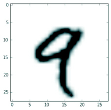
Listing 2.6. Displaying the fourth digit
digit = train_images[4] import matplotlib.pyplot as plt plt.imshow(digit, cmap=plt.cm.binary) plt.show()
In the previous example, we selected a specific digit alongside the first axis using the syntax train_images[i]. Selecting specific elements in a tensor is called tensor slicing. Let’s look at the tensor-slicing operations you can do on Numpy arrays.
The following example selects digits #10 to #100 (#100 isn’t included) and puts them in an array of shape (90, 28, 28):
>>> my_slice = train_images[10:100] >>> print(my_slice.shape) (90, 28, 28)
It’s equivalent to this more detailed notation, which specifies a start index and stop index for the slice along each tensor axis. Note that : is equivalent to selecting the entire axis:
>>> my_slice = train_images[10:100, :, :] ❶ >>> my_slice.shape (90, 28, 28) >>> my_slice = train_images[10:100, 0:28, 0:28] ❷ >>> my_slice.shape (90, 28, 28)
❶ Equivalent to the previous example
❷ Also equivalent to the previous example
In general, you may select between any two indices along each tensor axis. For instance, in order to select 14 × 14 pixels in the bottom-right corner of all images, you do this:
my_slice = train_images[:, 14:, 14:]
It’s also possible to use negative indices. Much like negative indices in Python lists, they indicate a position relative to the end of the current axis. In order to crop the images to patches of 14 × 14 pixels centered in the middle, you do this:
my_slice = train_images[:, 7:-7, 7:-7]
In general, the first axis (axis 0, because indexing starts at 0) in all data tensors you’ll come across in deep learning will be the samples axis (sometimes called the samples dimension). In the MNIST example, samples are images of digits.
In addition, deep-learning models don’t process an entire dataset at once; rather, they break the data into small batches. Concretely, here’s one batch of our MNIST digits, with batch size of 128:
batch = train_images[:128]
And here’s the next batch:
batch = train_images[128:256]
batch = train_images[128 * n:128 * (n + 1)]
When considering such a batch tensor, the first axis (axis 0) is called the batch axis or batch dimension. This is a term you’ll frequently encounter when using Keras and other deep-learning libraries.
Let’s make data tensors more concrete with a few examples similar to what you’ll encounter later. The data you’ll manipulate will almost always fall into one of the following categories:
This is the most common case. In such a dataset, each single data point can be encoded as a vector, and thus a batch of data will be encoded as a 2D tensor (that is, an array of vectors), where the first axis is the samples axis and the second axis is the features axis.
Let’s take a look at two examples:
Whenever time matters in your data (or the notion of sequence order), it makes sense to store it in a 3D tensor with an explicit time axis. Each sample can be encoded as a sequence of vectors (a 2D tensor), and thus a batch of data will be encoded as a 3D tensor (see figure 2.3).
Figure 2.3. A 3D timeseries data tensor
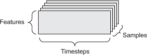
The time axis is always the second axis (axis of index 1), by convention. Let’s look at a few examples:
Images typically have three dimensions: height, width, and color depth. Although grayscale images (like our MNIST digits) have only a single color channel and could thus be stored in 2D tensors, by convention image tensors are always 3D, with a one-dimensional color channel for grayscale images. A batch of 128 grayscale images of size 256 × 256 could thus be stored in a tensor of shape (128, 256, 256, 1), and a batch of 128 color images could be stored in a tensor of shape (128, 256, 256, 3) (see figure 2.4).
Figure 2.4. A 4D image data tensor (channels-first convention)
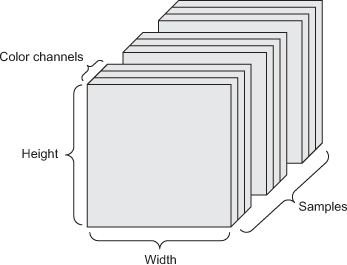
There are two conventions for shapes of images tensors: the channels-last convention (used by TensorFlow) and the channels-first convention (used by Theano). The TensorFlow machine-learning framework, from Google, places the color-depth axis at the end: (samples, height, width, color_depth). Meanwhile, Theano places the color depth axis right after the batch axis: (samples, color_depth, height, width). With the Theano convention, the previous examples would become (128, 1, 256, 256) and (128, 3, 256, 256). The Keras framework provides support for both formats.
Video data is one of the few types of real-world data for which you’ll need 5D tensors. A video can be understood as a sequence of frames, each frame being a color image. Because each frame can be stored in a 3D tensor (height, width, color_depth), a sequence of frames can be stored in a 4D tensor (frames, height, width, color_depth), and thus a batch of different videos can be stored in a 5D tensor of shape (-samples, frames, height, width, color_depth).
For instance, a 60-second, 144 × 256 YouTube video clip sampled at 4 frames per second would have 240 frames. A batch of four such video clips would be stored in a tensor of shape (4, 240, 144, 256, 3). That’s a total of 106,168,320 values! If the dtype of the tensor was float32, then each value would be stored in 32 bits, so the tensor would represent 405 MB. Heavy! Videos you encounter in real life are much lighter, because they aren’t stored in float32, and they’re typically compressed by a large factor (such as in the MPEG format).
Much as any computer program can be ultimately reduced to a small set of binary operations on binary inputs (AND, OR, NOR, and so on), all transformations learned by deep neural networks can be reduced to a handful of tensor operations applied to tensors of numeric data. For instance, it’s possible to add tensors, multiply tensors, and so on.
In our initial example, we were building our network by stacking Dense layers on top of each other. A Keras layer instance looks like this:
keras.layers.Dense(512, activation='relu')
This layer can be interpreted as a function, which takes as input a 2D tensor and returns another 2D tensor—a new representation for the input tensor. Specifically, the function is as follows (where W is a 2D tensor and b is a vector, both attributes of the layer):
output = relu(dot(W, input) + b)
Let’s unpack this. We have three tensor operations here: a dot product (dot) between the input tensor and a tensor named W; an addition (+) between the resulting 2D tensor and a vector b; and, finally, a relu operation. relu(x) is max(x, 0).
Note
Although this section deals entirely with linear algebra expressions, you won’t find any mathematical notation here. I’ve found that mathematical concepts can be more readily mastered by programmers with no mathematical background if they’re expressed as short Python snippets instead of mathematical equations. So we’ll use Numpy code throughout.
The relu operation and addition are element-wise operations: operations that are applied independently to each entry in the tensors being considered. This means these operations are highly amenable to massively parallel implementations (vectorized implementations, a term that comes from the vector processor supercomputer architecture from the 1970–1990 period). If you want to write a naive Python implementation of an element-wise operation, you use a for loop, as in this naive implementation of an element-wise relu operation:
def naive_relu(x):
assert len(x.shape) == 2 ❶
x = x.copy() ❷
for i in range(x.shape[0]):
for j in range(x.shape[1]):
x[i, j] = max(x[i, j], 0)
return x
❶ x is a 2D Numpy tensor.
❷ Avoid overwriting the input tensor.
def naive_add(x, y):
assert len(x.shape) == 2 ❶
assert x.shape == y.shape
x = x.copy() ❷
for i in range(x.shape[0]):
for j in range(x.shape[1]):
x[i, j] += y[i, j]
return x
❶ x and y are 2D Numpy tensors.
❷ Avoid overwriting the input tensor.
On the same principle, you can do element-wise multiplication, subtraction, and so on.
In practice, when dealing with Numpy arrays, these operations are available as well-optimized built-in Numpy functions, which themselves delegate the heavy lifting to a Basic Linear Algebra Subprograms (BLAS) implementation if you have one installed (which you should). BLAS are low-level, highly parallel, efficient tensor-manipulation routines that are typically implemented in Fortran or C.
So, in Numpy, you can do the following element-wise operation, and it will be blazing fast:
import numpy as np z = x + y ❶ z = np.maximum(z, 0.) ❷
❶ Element-wise addition
❷ Element-wise relu
Our earlier naive implementation of naive_add only supports the addition of 2D tensors with identical shapes. But in the Dense layer introduced earlier, we added a 2D tensor with a vector. What happens with addition when the shapes of the two tensors being added differ?
When possible, and if there’s no ambiguity, the smaller tensor will be broadcasted to match the shape of the larger tensor. Broadcasting consists of two steps:
Let’s look at a concrete example. Consider X with shape (32, 10) and y with shape (10,). First, we add an empty first axis to y, whose shape becomes (1, 10). Then, we repeat y 32 times alongside this new axis, so that we end up with a tensor Y with shape (32, 10), where Y[i, :] == y for i in range(0, 32). At this point, we can proceed to add X and Y, because they have the same shape.
In terms of implementation, no new 2D tensor is created, because that would be terribly inefficient. The repetition operation is entirely virtual: it happens at the algorithmic level rather than at the memory level. But thinking of the vector being repeated 10 times alongside a new axis is a helpful mental model. Here’s what a naive implementation would look like:
def naive_add_matrix_and_vector(x, y):
assert len(x.shape) == 2 ❶
assert len(y.shape) == 1 ❷
assert x.shape[1] == y.shape[0]
x = x.copy() ❸
for i in range(x.shape[0]):
for j in range(x.shape[1]):
x[i, j] += y[j]
return x
❶ x is a 2D Numpy tensor.
❷ y is a Numpy vector.
❸ Avoid overwriting the input tensor.
With broadcasting, you can generally apply two-tensor element-wise operations if one tensor has shape (a, b, ... n, n + 1, ... m) and the other has shape (n, n + 1, ... m). The broadcasting will then automatically happen for axes a through n - 1.
The following example applies the element-wise maximum operation to two tensors of different shapes via broadcasting:
import numpy as np x = np.random.random((64, 3, 32, 10)) ❶ y = np.random.random((32, 10)) ❷ z = np.maximum(x, y) ❸
❶ x is a random tensor with shape (64, 3, 32, 10).
❷ y is a random tensor with shape (32, 10).
❸ The output z has shape (64, 3, 32, 10) like x.
The dot operation, also called a tensor product (not to be confused with an element-wise product) is the most common, most useful tensor operation. Contrary to element-wise operations, it combines entries in the input tensors.
An element-wise product is done with the * operator in Numpy, Keras, Theano, and TensorFlow. dot uses a different syntax in TensorFlow, but in both Numpy and Keras it’s done using the standard dot operator:
import numpy as np z = np.dot(x, y)
In mathematical notation, you’d note the operation with a dot (.):
z = x . y
Mathematically, what does the dot operation do? Let’s start with the dot product of two vectors x and y. It’s computed as follows:
def naive_vector_dot(x, y):
assert len(x.shape) == 1 ❶
assert len(y.shape) == 1 ❶
assert x.shape[0] == y.shape[0]
z = 0.
for i in range(x.shape[0]):
z += x[i] * y[i]
return z
❶ x and y are Numpy vectors.
You’ll have noticed that the dot product between two vectors is a scalar and that only vectors with the same number of elements are compatible for a dot product.
You can also take the dot product between a matrix x and a vector y, which returns a vector where the coefficients are the dot products between y and the rows of x. You implement it as follows:
import numpy as np
def naive_matrix_vector_dot(x, y):
assert len(x.shape) == 2 ❶
assert len(y.shape) == 1 ❷
assert x.shape[1] == y.shape[0] ❸
z = np.zeros(x.shape[0]) ❹
for i in range(x.shape[0]):
for j in range(x.shape[1]):
z[i] += x[i, j] * y[j]
return z
❶ x is a Numpy matrix.
❷ y is a Numpy vector.
❸ The first dimension of x must be the same as the 0th dimension of y!
❹ This operation returns a vector of 0s with the same shape as y.
You could also reuse the code we wrote previously, which highlights the relationship between a matrix-vector product and a vector product:
def naive_matrix_vector_dot(x, y):
z = np.zeros(x.shape[0])
for i in range(x.shape[0]):
z[i] = naive_vector_dot(x[i, :], y)
return z
Note that as soon as one of the two tensors has an ndim greater than 1, dot is no longer symmetric, which is to say that dot(x, y) isn’t the same as dot(y, x).
Of course, a dot product generalizes to tensors with an arbitrary number of axes. The most common applications may be the dot product between two matrices. You can take the dot product of two matrices x and y (dot(x, y)) if and only if x.shape[1] == y.shape[0]. The result is a matrix with shape (x.shape[0], y.shape[1]), where the coefficients are the vector products between the rows of x and the columns of y. Here’s the naive implementation:
def naive_matrix_dot(x, y):
assert len(x.shape) == 2 ❶
assert len(y.shape) == 2 ❶
assert x.shape[1] == y.shape[0] ❷
z = np.zeros((x.shape[0], y.shape[1])) ❸
for i in range(x.shape[0]): ❹
for j in range(y.shape[1]): ❺
row_x = x[i, :]
column_y = y[:, j]
z[i, j] = naive_vector_dot(row_x, column_y)
return z
❶ x and y are Numpy matrices.
❷ The first dimension of x must be the same as the 0th dimension of y!
❸ This operation returns a matrix of 0s with a specific shape.
❹ Iterates over the rows of x ...
❺ ... and over the columns of y.
To understand dot-product shape compatibility, it helps to visualize the input and output tensors by aligning them as shown in figure 2.5.
Figure 2.5. Matrix dot-product box diagram
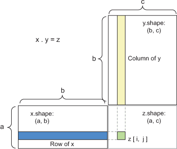
x, y, and z are pictured as rectangles (literal boxes of coefficients). Because the rows of x and the columns of y must have the same size, it follows that the width of x must match the height of y. If you go on to develop new machine-learning algorithms, you’ll likely be drawing such diagrams often.
More generally, you can take the dot product between higher-dimensional tensors, following the same rules for shape compatibility as outlined earlier for the 2D case:
(a, b, c, d) . (d,) -> (a, b, c) (a, b, c, d) . (d, e) -> (a, b, c, e)
And so on.
A third type of tensor operation that’s essential to understand is tensor reshaping. Although it wasn’t used in the Dense layers in our first neural network example, we used it when we preprocessed the digits data before feeding it into our network:
train_images = train_images.reshape((60000, 28 * 28))
Reshaping a tensor means rearranging its rows and columns to match a target shape. Naturally, the reshaped tensor has the same total number of coefficients as the initial tensor. Reshaping is best understood via simple examples:
>>> x = np.array([[0., 1.],
[2., 3.],
[4., 5.]])
>>> print(x.shape)
(3, 2)
>>> x = x.reshape((6, 1))
>>> x
array([[ 0.],
[ 1.],
[ 2.],
[ 3.],
[ 4.],
[ 5.]])
>>> x = x.reshape((2, 3))
>>> x
array([[ 0., 1., 2.],
[ 3., 4., 5.]])
A special case of reshaping that’s commonly encountered is transposition. Transposing a matrix means exchanging its rows and its columns, so that x[i, :] becomes x[:, i]:
>>> x = np.zeros((300, 20)) ❶
>>> x = np.transpose(x)
>>> print(x.shape)
(20, 300)
❶ Creates an all-zeros matrix of shape (300, 20)
Because the contents of the tensors manipulated by tensor operations can be interpreted as coordinates of points in some geometric space, all tensor operations have a geometric interpretation. For instance, let’s consider addition. We’ll start with the following vector:
A = [0.5, 1]
It’s a point in a 2D space (see figure 2.6). It’s common to picture a vector as an arrow linking the origin to the point, as shown in figure 2.7.
Figure 2.6. A point in a 2D space
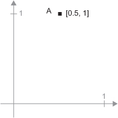
Figure 2.7. A point in a 2D space pictured as an arrow
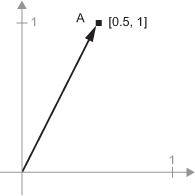
Let’s consider a new point, B = [1, 0.25], which we’ll add to the previous one. This is done geometrically by chaining together the vector arrows, with the resulting location being the vector representing the sum of the previous two vectors (see figure 2.8).
Figure 2.8. Geometric interpretation of the sum of two vectors
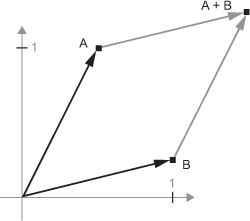
In general, elementary geometric operations such as affine transformations, rotations, scaling, and so on can be expressed as tensor operations. For instance, a rotation of a 2D vector by an angle theta can be achieved via a dot product with a 2 × 2 matrix R = [u, v], where u and v are both vectors of the plane: u = [cos(theta), sin(theta)] and v = [-sin(theta), cos(theta)].
You just learned that neural networks consist entirely of chains of tensor operations and that all of these tensor operations are just geometric transformations of the input data. It follows that you can interpret a neural network as a very complex geometric transformation in a high-dimensional space, implemented via a long series of simple steps.
In 3D, the following mental image may prove useful. Imagine two sheets of colored paper: one red and one blue. Put one on top of the other. Now crumple them together into a small ball. That crumpled paper ball is your input data, and each sheet of paper is a class of data in a classification problem. What a neural network (or any other machine-learning model) is meant to do is figure out a transformation of the paper ball that would uncrumple it, so as to make the two classes cleanly separable again. With deep learning, this would be implemented as a series of simple transformations of the 3D space, such as those you could apply on the paper ball with your fingers, one movement at a time.
Figure 2.9. Uncrumpling a complicated manifold of data
Uncrumpling paper balls is what machine learning is about: finding neat representations for complex, highly folded data manifolds. At this point, you should have a pretty good intuition as to why deep learning excels at this: it takes the approach of incrementally decomposing a complicated geometric transformation into a long chain of elementary ones, which is pretty much the strategy a human would follow to uncrumple a paper ball. Each layer in a deep network applies a transformation that disentangles the data a little—and a deep stack of layers makes tractable an extremely complicated disentanglement process.
As you saw in the previous section, each neural layer from our first network example transforms its input data as follows:
output = relu(dot(W, input) + b)
In this expression, W and b are tensors that are attributes of the layer. They’re called the weights or trainable parameters of the layer (the kernel and bias attributes, respectively). These weights contain the information learned by the network from exposure to training data.
Initially, these weight matrices are filled with small random values (a step called random initialization). Of course, there’s no reason to expect that relu(dot(W, input) + b), when W and b are random, will yield any useful representations. The resulting representations are meaningless—but they’re a starting point. What comes next is to gradually adjust these weights, based on a feedback signal. This gradual adjustment, also called training, is basically the learning that machine learning is all about.
This happens within what’s called a training loop, which works as follows. Repeat these steps in a loop, as long as necessary:
You’ll eventually end up with a network that has a very low loss on its training data: a low mismatch between predictions y_pred and expected targets y. The network has “learned” to map its inputs to correct targets. From afar, it may look like magic, but when you reduce it to elementary steps, it turns out to be simple.
Step 1 sounds easy enough—just I/O code. Steps 2 and 3 are merely the application of a handful of tensor operations, so you could implement these steps purely from what you learned in the previous section. The difficult part is step 4: updating the network’s weights. Given an individual weight coefficient in the network, how can you compute whether the coefficient should be increased or decreased, and by how much?
One naive solution would be to freeze all weights in the network except the one scalar coefficient being considered, and try different values for this coefficient. Let’s say the initial value of the coefficient is 0.3. After the forward pass on a batch of data, the loss of the network on the batch is 0.5. If you change the coefficient’s value to 0.35 and rerun the forward pass, the loss increases to 0.6. But if you lower the coefficient to 0.25, the loss falls to 0.4. In this case, it seems that updating the coefficient by -0.05 would contribute to minimizing the loss. This would have to be repeated for all coefficients in the network.
But such an approach would be horribly inefficient, because you’d need to compute two forward passes (which are expensive) for every individual coefficient (of which there are many, usually thousands and sometimes up to millions). A much better approach is to take advantage of the fact that all operations used in the network are differentiable, and compute the gradient of the loss with regard to the network’s coefficients. You can then move the coefficients in the opposite direction from the gradient, thus decreasing the loss.
If you already know what differentiable means and what a gradient is, you can skip to section 2.4.3. Otherwise, the following two sections will help you understand these concepts.
Consider a continuous, smooth function f(x) = y, mapping a real number x to a new real number y. Because the function is continuous, a small change in x can only result in a small change in y—that’s the intuition behind continuity. Let’s say you increase x by a small factor epsilon_x: this results in a small epsilon_y change to y:
f(x + epsilon_x) = y + epsilon_y
In addition, because the function is smooth (its curve doesn’t have any abrupt angles), when epsilon_x is small enough, around a certain point p, it’s possible to approximate f as a linear function of slope a, so that epsilon_y becomes a * epsilon_x:
f(x + epsilon_x) = y + a * epsilon_x
Obviously, this linear approximation is valid only when x is close enough to p.
The slope a is called the derivative of f in p. If a is negative, it means a small change of x around p will result in a decrease of f(x) (as shown in figure 2.10); and if a is positive, a small change in x will result in an increase of f(x). Further, the absolute value of a (the magnitude of the derivative) tells you how quickly this increase or decrease will happen.
Figure 2.10. Derivative of f in p
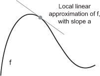
For every differentiable function f(x) (differentiable means “can be derived”: for example, smooth, continuous functions can be derived), there exists a derivative function f'(x) that maps values of x to the slope of the local linear approximation of f in those points. For instance, the derivative of cos(x) is -sin(x), the derivative of f(x) = a * x is f'(x) = a, and so on.
If you’re trying to update x by a factor epsilon_x in order to minimize f(x), and you know the derivative of f, then your job is done: the derivative completely describes how f(x) evolves as you change x. If you want to reduce the value of f(x), you just need to move x a little in the opposite direction from the derivative.
A gradient is the derivative of a tensor operation. It’s the generalization of the concept of derivatives to functions of multidimensional inputs: that is, to functions that take tensors as inputs.
Consider an input vector x, a matrix W, a target y, and a loss function loss. You can use W to compute a target candidate y_pred, and compute the loss, or mismatch, between the target candidate y_pred and the target y:
y_pred = dot(W, x) loss_value = loss(y_pred, y)
If the data inputs x and y are frozen, then this can be interpreted as a function mapping values of W to loss values:
loss_value = f(W)
Let’s say the current value of W is W0. Then the derivative of f in the point W0 is a tensor gradient(f)(W0) with the same shape as W, where each coefficient gradient(f) (W0)[i, j] indicates the direction and magnitude of the change in loss_value you observe when modifying W0[i, j]. That tensor gradient(f)(W0) is the gradient of the function f(W) = loss_value in W0.
You saw earlier that the derivative of a function f(x) of a single coefficient can be interpreted as the slope of the curve of f. Likewise, gradient(f)(W0) can be interpreted as the tensor describing the curvature of f(W) around W0.
For this reason, in much the same way that, for a function f(x), you can reduce the value of f(x) by moving x a little in the opposite direction from the derivative, with a function f(W) of a tensor, you can reduce f(W) by moving W in the opposite direction from the gradient: for example, W1 = W0 - step * gradient(f)(W0) (where step is a small scaling factor). That means going against the curvature, which intuitively should put you lower on the curve. Note that the scaling factor step is needed because gradient(f)(W0) only approximates the curvature when you’re close to W0, so you don’t want to get too far from W0.
Given a differentiable function, it’s theoretically possible to find its minimum analytically: it’s known that a function’s minimum is a point where the derivative is 0, so all you have to do is find all the points where the derivative goes to 0 and check for which of these points the function has the lowest value.
Applied to a neural network, that means finding analytically the combination of weight values that yields the smallest possible loss function. This can be done by solving the equation gradient(f)(W) = 0 for W. This is a polynomial equation of N variables, where N is the number of coefficients in the network. Although it would be possible to solve such an equation for N = 2 or N = 3, doing so is intractable for real neural networks, where the number of parameters is never less than a few thousand and can often be several tens of millions.
Instead, you can use the four-step algorithm outlined at the beginning of this section: modify the parameters little by little based on the current loss value on a random batch of data. Because you’re dealing with a differentiable function, you can compute its gradient, which gives you an efficient way to implement step 4. If you update the weights in the opposite direction from the gradient, the loss will be a little less every time:
Easy enough! What I just described is called mini-batch stochastic gradient descent (mini-batch SGD). The term stochastic refers to the fact that each batch of data is drawn at random (stochastic is a scientific synonym of random). Figure 2.11 illustrates what happens in 1D, when the network has only one parameter and you have only one training sample.
Figure 2.11. SGD down a 1D loss curve (one learnable parameter)
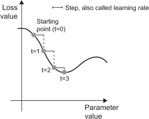
As you can see, intuitively it’s important to pick a reasonable value for the step factor. If it’s too small, the descent down the curve will take many iterations, and it could get stuck in a local minimum. If step is too large, your updates may end up taking you to completely random locations on the curve.
Note that a variant of the mini-batch SGD algorithm would be to draw a single sample and target at each iteration, rather than drawing a batch of data. This would be true SGD (as opposed to mini-batch SGD). Alternatively, going to the opposite extreme, you could run every step on all data available, which is called batch SGD. Each update would then be more accurate, but far more expensive. The efficient compromise between these two extremes is to use mini-batches of reasonable size.
Although figure 2.11 illustrates gradient descent in a 1D parameter space, in practice you’ll use gradient descent in highly dimensional spaces: every weight coefficient in a neural network is a free dimension in the space, and there may be tens of thousands or even millions of them. To help you build intuition about loss surfaces, you can also visualize gradient descent along a 2D loss surface, as shown in figure 2.12. But you can’t possibly visualize what the actual process of training a neural network looks like—you can’t represent a 1,000,000-dimensional space in a way that makes sense to humans. As such, it’s good to keep in mind that the intuitions you develop through these low-dimensional representations may not always be accurate in practice. This has historically been a source of issues in the world of deep-learning research.
Figure 2.12. Gradient descent down a 2D loss surface (two learnable parameters)
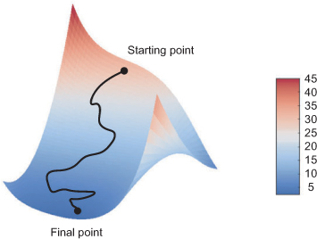
Additionally, there exist multiple variants of SGD that differ by taking into account previous weight updates when computing the next weight update, rather than just looking at the current value of the gradients. There is, for instance, SGD with momentum, as well as Adagrad, RMSProp, and several others. Such variants are known as optimization methods or optimizers. In particular, the concept of momentum, which is used in many of these variants, deserves your attention. Momentum addresses two issues with SGD: convergence speed and local minima. Consider figure 2.13, which shows the curve of a loss as a function of a network parameter.
Figure 2.13. A local minimum and a global minimum
As you can see, around a certain parameter value, there is a local minimum: around that point, moving left would result in the loss increasing, but so would moving right. If the parameter under consideration were being optimized via SGD with a small learning rate, then the optimization process would get stuck at the local minimum instead of making its way to the global minimum.
You can avoid such issues by using momentum, which draws inspiration from physics. A useful mental image here is to think of the optimization process as a small ball rolling down the loss curve. If it has enough momentum, the ball won’t get stuck in a ravine and will end up at the global minimum. Momentum is implemented by moving the ball at each step based not only on the current slope value (current acceleration) but also on the current velocity (resulting from past acceleration). In practice, this means updating the parameter w based not only on the current gradient value but also on the previous parameter update, such as in this naive implementation:
past_velocity = 0. momentum = 0.1 ❶ while loss > 0.01: ❷ w, loss, gradient = get_current_parameters() velocity = past_velocity * momentum - learning_rate * gradient w = w + momentum * velocity - learning_rate * gradient past_velocity = velocity update_parameter(w)
❶ Constant momentum factor
❷ Optimization loop
In the previous algorithm, we casually assumed that because a function is differentiable, we can explicitly compute its derivative. In practice, a neural network function consists of many tensor operations chained together, each of which has a simple, known derivative. For instance, this is a network f composed of three tensor operations, a, b, and c, with weight matrices W1, W2, and W3:
f(W1, W2, W3) = a(W1, b(W2, c(W3)))
Calculus tells us that such a chain of functions can be derived using the following identity, called the chain rule: f(g(x)) = f'(g(x)) * g'(x). Applying the chain rule to the computation of the gradient values of a neural network gives rise to an algorithm called Backpropagation (also sometimes called reverse-mode differentiation). Backpropagation starts with the final loss value and works backward from the top layers to the bottom layers, applying the chain rule to compute the contribution that each parameter had in the loss value.
Nowadays, and for years to come, people will implement networks in modern frameworks that are capable of symbolic differentiation, such as TensorFlow. This means that, given a chain of operations with a known derivative, they can compute a gradient function for the chain (by applying the chain rule) that maps network parameter values to gradient values. When you have access to such a function, the backward pass is reduced to a call to this gradient function. Thanks to symbolic differentiation, you’ll never have to implement the Backpropagation algorithm by hand. For this reason, we won’t waste your time and your focus on deriving the exact formulation of the Backpropagation algorithm in these pages. All you need is a good understanding of how gradient-based optimization works.
You’ve reached the end of this chapter, and you should now have a general understanding of what’s going on behind the scenes in a neural network. Let’s go back to the first example and review each piece of it in the light of what you’ve learned in the previous three sections.
This was the input data:
(train_images, train_labels), (test_images, test_labels) = mnist.load_data()
train_images = train_images.reshape((60000, 28 * 28))
train_images = train_images.astype('float32') / 255
test_images = test_images.reshape((10000, 28 * 28))
test_images = test_images.astype('float32') / 255
Now you understand that the input images are stored in Numpy tensors, which are here formatted as float32 tensors of shape (60000, 784) (training data) and (10000, 784) (test data), respectively.
This was our network:
network = models.Sequential() network.add(layers.Dense(512, activation='relu', input_shape=(28 * 28,))) network.add(layers.Dense(10, activation='softmax'))
Now you understand that this network consists of a chain of two Dense layers, that each layer applies a few simple tensor operations to the input data, and that these operations involve weight tensors. Weight tensors, which are attributes of the layers, are where the knowledge of the network persists.
This was the network-compilation step:
network.compile(optimizer='rmsprop',
loss='categorical_crossentropy',
metrics=['accuracy'])
Now you understand that categorical_crossentropy is the loss function that’s used as a feedback signal for learning the weight tensors, and which the training phase will attempt to minimize. You also know that this reduction of the loss happens via mini-batch stochastic gradient descent. The exact rules governing a specific use of gradient descent are defined by the rmsprop optimizer passed as the first argument.
Finally, this was the training loop:
network.fit(train_images, train_labels, epochs=5, batch_size=128)
Now you understand what happens when you call fit: the network will start to iterate on the training data in mini-batches of 128 samples, 5 times over (each iteration over all the training data is called an epoch). At each iteration, the network will compute the gradients of the weights with regard to the loss on the batch, and update the weights accordingly. After these 5 epochs, the network will have performed 2,345 gradient updates (469 per epoch), and the loss of the network will be sufficiently low that the network will be capable of classifying handwritten digits with high accuracy.
At this point, you already know most of what there is to know about neural networks.